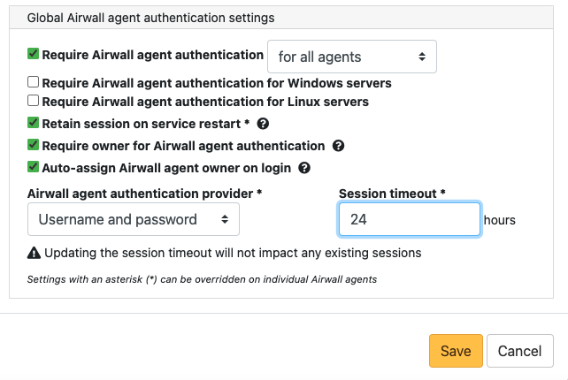

Walkthrough - Onboard people to your Airwall secure network with User Authentication
How to set up global user/password authentication for Airwall Agents and Servers connecting to your Airwall secure network.
- Supported Versions
- Conductor v2.2.10 and later. This walkthrough is based on v3.0, so some things may be slightly different on earlier versions.
- Require User authentication globally.
- Onboard people using People Groups.
- Add people as Remote Access Users.
These steps are covered in more detail below.
Finding the right balance between ease of use and security is an ongoing challenge.
This walkthrough shows how you can easily onboard and provide trust to a person, but you may choose to keep additional security checks in place, like granting the provisioning request based on the Device ID a person gives you.
A balanced option might include automatic onboarding, but only granting trust to a benign device that they can ping for communication verification and then provide final trust to secure environments once information has been verified verbally.
Step 1: Require user authentication globally
- Go to SettingsAuthentication, and under Settings, select Edit Settings (in pre-v3.0, this is under Global Airwall agent authentication settings).
-
Check or set your authentication options:
- Check Require Airwall agent authentication and select the option for all agents.
- Under Airwall agent authentication, under Airwall Agent Authentication Provider, select Username and password, or an OpenID Connect (OIDC) third-party authentication provider, if you've set it up. See Integrate Third-party Authentication with OpenID Connect.
- (Optional) You can also set a custom Session timeout or whether people need to log in when they restart their Airwall Agent

For more information, see Configure Authentication Options. You can also require authentication per device on the Airwall Agent or Server page.
Step 2: Onboard People using People Groups
- Set up a People Group, configuring the onboarding options you want to this People group to have. You can add people on the People tab, or add them to the group as you create users in the Conductor.
-
On the User onboarding tab:
- Check Provide an activation code for each member.
- Check Send onboarding email to users if you want to send emails automatically.
- Pre-configure the General, Airwall, and Groups settings for users when they onboard. Setting these options allows members of the group to activate their connections. For more information, see Connect People's Devices with Activation Codes.
Note: If you want to configure which version of the Airwall Agent they download, you can set that on the Conductor Settings page under Global Airwall agent settings.
Step 3: Add Remote Access Users
- Add the people you want to connect to the Conductor. For Remote Access Users, see Connect People as Remote Access Users.
-
As you save each user, from each person's People
page, add users to the people onboarding group created in Step 2.
-
Under People groups, select
Edit.

-
Under People groups, select
Edit.
-
The people are sent an onboarding email. If desired, you can send them
custom instructions, or point them to one of these help topics: I have a "Finish Setting up my account" email or I have an Activation Code.
As people click the link in the email to set their password and log in to the Conductor, they'll be directed to the Connect an Airwall Agent page where they can install an Airwall Agent or Server and activate their connections.
What's Next
You can get a report on remote sessions from . For more information, see Run Network Activity Reports.
You can see who's remotely logged into your Airwall secure network. See Check Remote Sessions.
You can also see which users have used their Activation codes. See Check Status of People Onboarding.